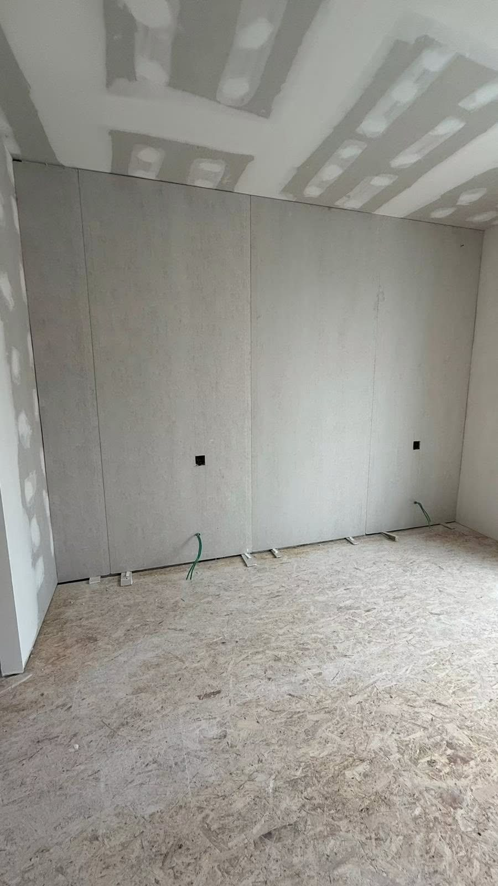
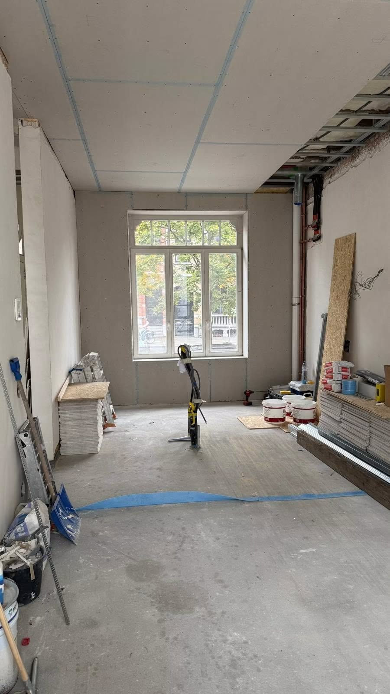
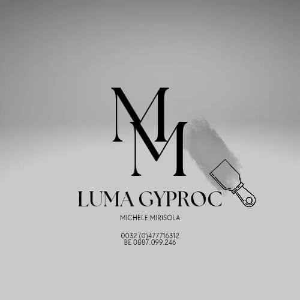

Scheidingswanden, voorzetwanden en plafonds in gyproc voor nieuwbouw en renovatie. Stipt geplaatst en schilderklaar opgeleverd.
Extra ruimtes creëren in uw woning, met een naadloze afwerking.
Een snelle oplossing om buitenmuren te isoleren en netjes weg te werken.
Gyprocplafonds en verlaagde plafonds, bijvoorbeeld om ventilatie of leidingen te verbergen. Voor winkels en handelszaken ook systeemplafonds.
Warmte- en geluidsisolatie in wanden en plafonds, ook tegen lawaai van de buren.
Gyproc tegen schuine kanten, met scheidingswanden voor technieken of trapopening.
Bestaande gyprocwerken afwerken of een beschadigde wand herstellen.



Michele Mirisola en zijn neef Valentino Mirisola richtten Luma Gyproc op met jarenlange ervaring als leidraad. Hun werkgebied omvat de volledige regio Limburg.
Stiptheid en een perfecte afwerking kenmerken hun aanpak, bij particulieren en in onderaanneming, voor nieuwbouw en renovatie. Ook voor winkels en handelszaken plaatsen ze systeemplafonds.
Vertel kort wat u wilt laten plaatsen en hoeveel vierkante meter het ongeveer is.